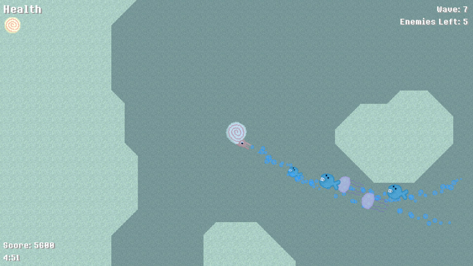

This is a game that I made for the 2026 Game Dev Club Club (a
network of game development clubs from universities around the
country) Jam Jam (a game jam they held). It was made over the
course of a weekend. I personally like how it turned out -
it's a simple game but kind of fun and satisfying to play
in my personal opinion.
The basic idea is that you control a Nautilus and have to avoid
predatory fish in order to survive as long as possible. You can
ram into the fish with your shell (the theme was "shell") and
pick up power-ups.
It didn't do that well in terms of ratings, but I'm still
glad I got to participate in the jam and finish a small
project. You can download/play Naughty Nautilus on itch.io
or browse the source code on
GitHub.
Download/play on itch.io